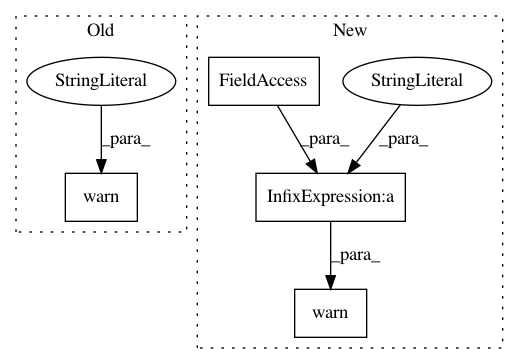

657c96e2577fea6cd4c977cef32be30d02c136ae,sru/modules.py,SRUCell,reset_parameters,#SRUCell#,153
Before Change
if hasattr(self.custom_m, "reset_parameters"):
self.custom_m.reset_parameters()
else:
warnings.warn("Unable to reset parameters for custom module. "
"reset_parameters() method not found for custom module.")
if not self.v1:
// intialize weight_c such that E[w]=0 and Var[w]=1
self.weight_c.data.uniform_(-3.0**0.5, 3.0**0.5)
After Change
if hasattr(self.custom_m, "reset_parameters"):
self.custom_m.reset_parameters()
else:
warnings.warn("Unable to reset parameters for custom module. "
"reset_parameters() method not found for custom module. "
+ self.custom_m.__class__.__name__)
if not self.v1:
// intialize weight_c such that E[w]=0 and Var[w]=1
self.weight_c.data.uniform_(-3.0**0.5, 3.0**0.5)
In pattern: SUPERPATTERN
Frequency: 3
Non-data size: 4
Instances
Project Name: asappresearch/sru
Commit Name: 657c96e2577fea6cd4c977cef32be30d02c136ae
Time: 2020-12-07
Author: hp@asapp.com
File Name: sru/modules.py
Class Name: SRUCell
Method Name: reset_parameters
Project Name: keras-team/keras
Commit Name: 560cb94519ad5a5eed3adc323a9e1ad3cf0690e9
Time: 2015-06-30
Author: francois.chollet@gmail.com
File Name: keras/callbacks.py
Class Name: EarlyStopping
Method Name: on_epoch_end
Project Name: keras-team/keras
Commit Name: 560cb94519ad5a5eed3adc323a9e1ad3cf0690e9
Time: 2015-06-30
Author: francois.chollet@gmail.com
File Name: keras/callbacks.py
Class Name: ModelCheckpoint
Method Name: on_epoch_end